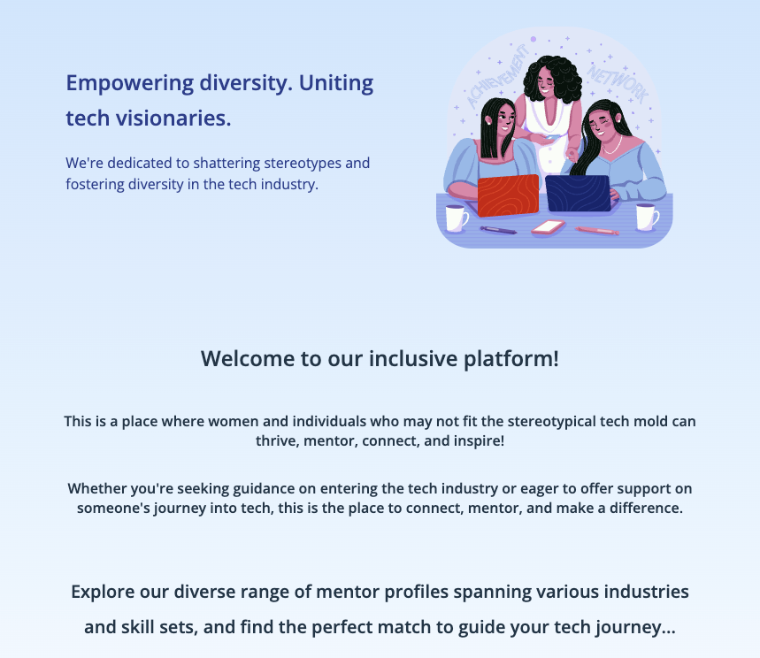

Group Project - DiversiTech
Our final project for the She Codes Plus program was to work in a team of 6 to create a web platform for a client that helped to connect people in tech who are typically underrepresented and usually find it difficult to find other 'people like them' to connect with.
We used Agile Methodology to plan, design, build and test the project. We also used the following tools to aid in our collaboration and project management:
- Mural to design the user-stories and map out a basic database model
- Google Drive to collate and refine requirements gathering
- Trello to manage our tasks
- GitHub to collaborate our code
- Slack to communicate with each other
- Google Meet to host our stand up meetings
- Figma to design the wireframes and the final design of the app.
- React JS to create the front end
- Django REST Framework to create the back end.
- fly.io to deploy the back end
- Netlify to deploy the front end.
- Insomnia to test the API end points and back end server
- dbshell to run SQlite3 to run the commandline client to query and manage the deployed database
Deployed App
Django Rest Framework - Back End
The back-end of the project used DRF to create a database and API server that receives GET, POST, PUT and DELETE API calls from our React JS front end app.
My main contribution to the back end of this project was in the design and administration of the database
Click on the image to view the GitHub repo for the back end, where you can read more about the project objectives, view screenshots of API end point testing in insomnia, you'll also be able to see the Entity Relationship Diagram and the API Specification documentation.

React JS - Front End
The client side app used React JS, HTML, CSS and JavaScript that sends GET, POST, PUT and DELETE API calls to our Django REST Framework back end server.
Users can create an account, create a profile, filter profiles by multiple selections, view a single profile and if they are logged in, they can obtain contact details to connect to the profile owner.
My main contrubution to the client side app was the filtering functionality. I also created the bones of the user sign-up, login and create profile forms
Click on the image to view the GitHub repo, where you can read more about the project objectives.